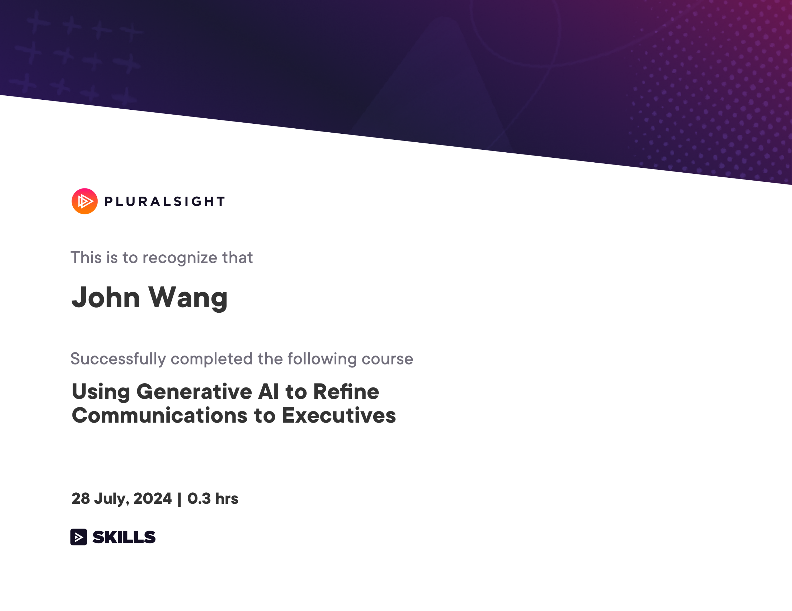

John's Artificial Intelligence Certificates
- Strategy
- Teaching
- Fundamentals
- Product Management
- AI Agents
- Fundamentals of Agents from Hugging Face
- Agentic AI and AI Agents: A Primer for Leaders from Vanderbilt University by James White
- Claude Code: Software Engineering with Generative AI Agents from Vanderbilt University by James White
- Introduction to Developing AI Agents from Pluralsight by Muhammad Sajid
- Creating Personal AI Agents from Pluralsight by Kamran Ayub
- Using AI Agents for Productivity from Pluralsight by Vlad Catrinescu
- Human–AI Agent Collaboration from Pluralsight by Bogdan Sucaciu
- Agentic AI Lifecycle Management from Pluralsight by Eman Hassan
- Deploying AI Agents in Production Environments from Pluralsight by Pratheerth Padman
- Agentic AI Safety and Alignment from Pluralsight by Steve Buchanan
- Agentic AI in Cybersecurity from Pluralsight by Tim Coakley
- Integrating AI Agents into Development Workflows from Pluralsight by Adam Bertram
- Integrating AI Agents in Enterprise Systems from Pluralsight by Tom Taulli
- Evaluating and Optimizing LLM Agents from Pluralsight by Brian Letort
- AI Agents Orchestration
- Multi AI Agent Systems with CrewAI from CrewAI by João Moura
- Mastering Multi-Agent Development with AutoGen from Packt by Paulo Dichone
- Elevate Team Productivity with Crew AI from Coursera by Yash Thakker
- Agentic AI for Beginner from Udemy by Aman Kumar
- n8n: A Complete Guide to the Automation Tool from Analytics Vidhya by Gyan Prakash Tripathi
- Introduction to CrewAI: Building a Researcher Assistant Agent from Analytics Vidhya by Alessandro Romano
- Applying Multi-agent Systems to Daily Tasks from Pluralsight by Bogdan Sucaciu
- Developing Multi-agent Systems from Pluralsight by Muhammad Sajid
- Developing Task-specific Agents with CrewAI from Pluralsight by Jon Friskics
- Building Multi-agent Systems with AutoGen from Pluralsight by Sandy Ludosky
- Introduction to LangGraph from Pluralsight by Craig Golightly
- Basics of LangGraph Workflows from Pluralsight by Craig Golightly
- Model Context Protocol (MCP)
- Model Context Protocol: Advanced Topics from Anthropic
- Introduction to Model Context Protocol from Anthropic
- MCP for Production Automation from Hugging Face
- Fundamentals of MCP (Model Context Protocol) from Hugging Face
- Model Context Protocol (MCP) Mastery from Fractal Analytics Academy
- Foundations of Model Context Protocol from Analytics Vidhya by Apoorv Vishnoi
- MCP: Unlock AI integrations with real-world demos from Analytics Vidhya by Aditya Oberai
- AI Assistants
- Amazon Q Business Getting Started from AWS
- A Hands-On Look at Amazon Q Business Expert from AWS by Paul Colmer
- MidJourney: From Inspiration to Implementation from Analytics Vidhya by Sandeep Singh
- Duet AI in Gmail from Google Cloud
- Using Generative AI to Refine Communications to Executives from Pluralsight by Ed Freitas
- SEO with AI from Sololearn
- ChatGPT for Excel from Great Learning Academy by E. Balachandra Murthy
- AI Code Assistants
- Vibe Coding
- Vibe Coding with Cursor AI from Scrimba by Maham Codes
- Build AI Apps with Lovable: Vibe Coding for Web Dev from Udemy by Pavan Kumar, Manish Patel
- AI Development with Lovable AI 2.0 - A Deeper Dive from Udemy by Randy Minder
- Dashboards in Minutes with Claude AI: Stunning and NOW! from Udemy by Federico Garay
- Vibe Coding with Replit from Analytics Vidhya by Kunal Jain
- Guide to Vibe Coding in Windsurf from Analytics Vidhya by Apoorv Vishnoi
- Vibe Coding from Sololearn
- Prompt Engineering
- Generative AI
- Generative AI Primer from Vanderbilt University by James White
- Generative AI Deep Research: Strategic AI Edge for Leaders from Vanderbilt University by James White
- Generative AI for Web Development Specialization (3 Courses) from Scrimba
- Introduction to Generative AI from Google Cloud
- Introduction to Image Generation from Google Cloud
- Databricks Accredited Generative AI Fundamentals from Databricks
- Generative AI API
- Retrieval-Augmented Generation (RAG)
- Security
- Agentic AI - Risk and Cybersecurity Masterclass 2025 from Udemy by Taimur Ijlal
- AI Security Bootcamp: LLM Hacking Basics from Udemy by Naveen Konrajankuppam Mahavishnu, Mohankumar Vengatachalam
- Defending Against AI-Generated Attacks from Codecademy
- Building the AI Security Roadmap from Silicon Valley Certification Hub by Tiffany Saade
- Cybersecurity and Artificial Intelligence from Pluralsight by Christopher Rees
- OpenAI Security and Moderations from Pluralsight by Chris Jackson
- Security Risks and Privacy Concerns Using Generative AI from Pluralsight by Dr. Shaila Rana
- AI Security from Lakera
- Vulnerability Examples
- Governance
- Introduction to Responsible AI from Google Cloud
- AI Governance from STACKIT
- AI-Ready Data from Silicon Valley Certification Hub by Kash Mehdi
- Navigating Global AI Policy and Regulations: Insights for Latam from Silicon Valley Certification Hub by Merve Hickok
- Artificial Intelligence Essentials: Responsible AI from Pluralsight by Ben Weissman
- AI and the Law: Implementing Trustworthy AI from Pluralsight by Anton Ekker
- AWS
- Amazon Bedrock Getting Started from AWS
- Introduction to Amazon Bedrock: Foundation Models and AI Applications from AWS
- Automate Generative AI workflows using Amazon Bedrock Flows from AWS
- Building Retrieval Augmented Generation (RAG) workflows with Amazon OpenSearch Service from AWS
- AWS SimuLearn: Secure Conversational AI with Guardrails from AWS
- Amazon Bedrock AgentCore Getting Started from AWS
- Amazon Bedrock AgentCore Identity Tutorial from AWS
- Amazon Bedrock AgentCore Memory Tutorial from AWS
- Amazon Bedrock AgentCore RunTime Tutorial from AWS
- Amazon Bedrock AgentCore Tools Tutorial from AWS
- Introduction to Amazon Bedrock from Pluralsight by Muhammad Sajid
- Create AWS Infrastructure as Code Templates Using Generative AI from Pluralsight by Shubham Sinha
- Azure
Resources
Strategy (2)
AI Strategy and Governance from University of Pennsylvania, Wharton School

AI+ Chief AI Officer™ from AI CERTs

Teaching (1)
Teaching AI Fluency from Anthropic
Fundamentals (1)
AI Ready from STACKIT
Product Management (4)
Generative AI for Innovators from Pluralsight by Esteban Herrera
Artificial Intelligence Micro-Certification (AIC) from Product School by Sam Stevens

AI for Product Management from Pendo

AI Product from Great Learning Academy by Abhinanda Sarkar
AI Agents (14)
Fundamentals of Agents from Hugging Face
{kind=link}

Agentic AI and AI Agents: A Primer for Leaders from Vanderbilt University by James White
Claude Code: Software Engineering with Generative AI Agents from Vanderbilt University by James White
Introduction to Developing AI Agents from Pluralsight by Muhammad Sajid
Creating Personal AI Agents from Pluralsight by Kamran Ayub
Using AI Agents for Productivity from Pluralsight by Vlad Catrinescu
Human–AI Agent Collaboration from Pluralsight by Bogdan Sucaciu
Agentic AI Lifecycle Management from Pluralsight by Eman Hassan
Deploying AI Agents in Production Environments from Pluralsight by Pratheerth Padman

Agentic AI Safety and Alignment from Pluralsight by Steve Buchanan
Agentic AI in Cybersecurity from Pluralsight by Tim Coakley
Integrating AI Agents into Development Workflows from Pluralsight by Adam Bertram
Integrating AI Agents in Enterprise Systems from Pluralsight by Tom Taulli
Evaluating and Optimizing LLM Agents from Pluralsight by Brian Letort
AI Agents Orchestration (12)
Multi AI Agent Systems with CrewAI from CrewAI by João Moura
Mastering Multi-Agent Development with AutoGen from Packt by Paulo Dichone

Elevate Team Productivity with Crew AI from Coursera by Yash Thakker

Agentic AI for Beginner from Udemy by Aman Kumar
n8n: A Complete Guide to the Automation Tool from Analytics Vidhya by Gyan Prakash Tripathi
Introduction to CrewAI: Building a Researcher Assistant Agent from Analytics Vidhya by Alessandro Romano
Applying Multi-agent Systems to Daily Tasks from Pluralsight by Bogdan Sucaciu
Developing Multi-agent Systems from Pluralsight by Muhammad Sajid
Developing Task-specific Agents with CrewAI from Pluralsight by Jon Friskics

Building Multi-agent Systems with AutoGen from Pluralsight by Sandy Ludosky
Introduction to LangGraph from Pluralsight by Craig Golightly

Basics of LangGraph Workflows from Pluralsight by Craig Golightly

Model Context Protocol (MCP) (7)
Model Context Protocol: Advanced Topics from Anthropic
Introduction to Model Context Protocol from Anthropic
MCP for Production Automation from Hugging Face
{kind=link}
Fundamentals of MCP (Model Context Protocol) from Hugging Face
{kind=link}

Model Context Protocol (MCP) Mastery from Fractal Analytics Academy

Foundations of Model Context Protocol from Analytics Vidhya by Apoorv Vishnoi
MCP: Unlock AI integrations with real-world demos from Analytics Vidhya by Aditya Oberai
AI Assistants (7)
Amazon Q Business Getting Started from AWS

A Hands-On Look at Amazon Q Business Expert from AWS by Paul Colmer
MidJourney: From Inspiration to Implementation from Analytics Vidhya by Sandeep Singh
Duet AI in Gmail from Google Cloud

Using Generative AI to Refine Communications to Executives from Pluralsight by Ed Freitas

SEO with AI from Sololearn
ChatGPT for Excel from Great Learning Academy by E. Balachandra Murthy

AI Code Assistants (3)
Claude Code in Action from Anthropic
Introduction to Amazon Q Developer (Technical) from AWS
Intro to Claude AI from Scrimba by Shant Dashjian

Vibe Coding (7)
Vibe Coding with Cursor AI from Scrimba by Maham Codes

Build AI Apps with Lovable: Vibe Coding for Web Dev from Udemy by Pavan Kumar, Manish Patel
AI Development with Lovable AI 2.0 - A Deeper Dive from Udemy by Randy Minder
Dashboards in Minutes with Claude AI: Stunning and NOW! from Udemy by Federico Garay
Vibe Coding with Replit from Analytics Vidhya by Kunal Jain
Guide to Vibe Coding in Windsurf from Analytics Vidhya by Apoorv Vishnoi
Vibe Coding from Sololearn
Prompt Engineering (3)
Essentials of Prompt Engineering from AWS
Prompt Engineering for Web Developers from Scrimba by Treasure Porth

AI Prompting Essentials Certified (AIPEC) from Management and Strategy Institute


Generative AI (6)
Generative AI Primer from Vanderbilt University by James White

Generative AI Deep Research: Strategic AI Edge for Leaders from Vanderbilt University by James White
Generative AI for Web Development Specialization (3 Courses) from Scrimba
Introduction to Generative AI from Google Cloud

Introduction to Image Generation from Google Cloud

Databricks Accredited Generative AI Fundamentals from Databricks

Generative AI API (2)
OpenAI Chat Completions API from Pluralsight by Xavier Morera
OpenAI Assistant API from Pluralsight by Xavier Morera

Retrieval-Augmented Generation (RAG) (3)
Vector Space Models and Embeddings in RAGs from Pluralsight by Axel Sirota
Multi-modal RAGs from Pluralsight by Dhiraj Kumar
Modular RAGs from Pluralsight by JS Padoan

Security (8)
Agentic AI - Risk and Cybersecurity Masterclass 2025 from Udemy by Taimur Ijlal

AI Security Bootcamp: LLM Hacking Basics from Udemy by Naveen Konrajankuppam Mahavishnu, Mohankumar Vengatachalam

Defending Against AI-Generated Attacks from Codecademy
Building the AI Security Roadmap from Silicon Valley Certification Hub by Tiffany Saade
Cybersecurity and Artificial Intelligence from Pluralsight by Christopher Rees

OpenAI Security and Moderations from Pluralsight by Chris Jackson

Security Risks and Privacy Concerns Using Generative AI from Pluralsight by Dr. Shaila Rana
AI Security from Lakera

Vulnerability Examples (1)
CVE-2025-32711 Microsoft 365 Copilot EchoLeak: Zero-click AI Vulnerability from Pluralsight by Chris Jackson
Governance (6)
Introduction to Responsible AI from Google Cloud
AI Governance from STACKIT
AI-Ready Data from Silicon Valley Certification Hub by Kash Mehdi

Navigating Global AI Policy and Regulations: Insights for Latam from Silicon Valley Certification Hub by Merve Hickok
Artificial Intelligence Essentials: Responsible AI from Pluralsight by Ben Weissman
AI and the Law: Implementing Trustworthy AI from Pluralsight by Anton Ekker
AWS (12)
Amazon Bedrock Getting Started from AWS

Introduction to Amazon Bedrock: Foundation Models and AI Applications from AWS

Automate Generative AI workflows using Amazon Bedrock Flows from AWS

Building Retrieval Augmented Generation (RAG) workflows with Amazon OpenSearch Service from AWS

AWS SimuLearn: Secure Conversational AI with Guardrails from AWS

Amazon Bedrock AgentCore Getting Started from AWS

Amazon Bedrock AgentCore Identity Tutorial from AWS
Amazon Bedrock AgentCore Memory Tutorial from AWS
Amazon Bedrock AgentCore RunTime Tutorial from AWS
Amazon Bedrock AgentCore Tools Tutorial from AWS

Introduction to Amazon Bedrock from Pluralsight by Muhammad Sajid

Create AWS Infrastructure as Code Templates Using Generative AI from Pluralsight by Shubham Sinha

Azure (1)
Azure AI Fundamentals from Pluralsight by Daniel Krzyczkowski